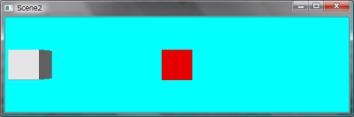
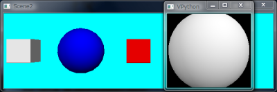
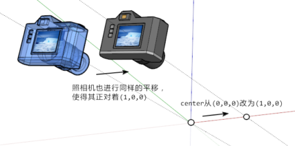
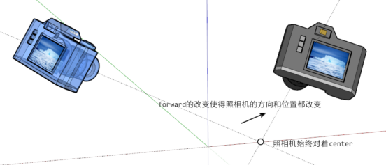

场景窗口
visual中的所有的3D物体都在一个窗口中显示，此窗口为display类的对象，通过这对象我们可以修改窗口的各种属性；控制场景中的照相机，从各个角度观察场景。
控制场景窗口
从visual库载入所有对象之后，缺省情况下，有一个可以用变量scene访问的缺省的场景窗口对象，它也是初始情况下的当前窗口：
>>> from visual import *
>>> scene
<visual.ui.display object at 0x032BF600>
我们看到场景窗口对象是visual.ui.display类的一个实例。真正的窗口需要在其中放置物体才会被显示出来。因此如果我们用display()创建自己的窗口对象的话，那么可以不用管这个缺省的窗口对象，我们创建的窗口对象将变成当前窗口。用box等类创建的3D物体将会被放到当前窗口中。下面语句调用display创建一个新的窗口对象：
>>> scene2 = display(title='Scene2', x=0, y=0, width=600, height=200, ...
center=(5,0,0), background=(0,1,1))
执行上面的语句之后，将创建一个标题为Scene2的窗口，其左上角的坐标为(0,0)，宽度为600像素，高度为200像素，照相机所正对的位置的坐标(5,0,0)，也就是说窗口中心的点的3D坐标为(5,0,0)，背景为青色。注意要显示窗口，我们需要往里面放物体：
>>> box() >>> <visual.primitives.box object at 0x0334F090>>>> box(pos=(5,0,0), color=color.red) >>> <visual.primitives.box object at 0x0334F120>
第一个立方体放在了缺省坐标(0,0,0)处，其颜色为缺省的白色；第二个立方体放在了坐标(5,0,0)处，颜色为红色。红色立方体在窗口的中心，和我们设置的窗口的center属性一致。

在场景中放置立方体
我们可以调用窗口对象的select方法使其成为当前窗口。通过display.get_selected()可以获得当前窗口对象：
>>> scene.select()
>>> sphere()
<visual.primitives.sphere object at 0x0331D7B0>
>>> scene2.select()
>>> sphere(pos=(2.5,0,0), color=color.blue)
<visual.primitives.sphere object at 0x0331D810>
>>> display.get_selected() == scene2
True
上面的程序先将scene改为当前窗口，然后在其中创建一个球体；接着将scene2改为当前窗口，在其中创建一个蓝色的球体，放在坐标(2.5,0,0)处。最后调用display.get_selected()检查当前窗口是否是scene2。执行这段程序之后，将出现两个场景窗口，缺省窗口的标题为VPython，其中有一个球体；我们自己创建的窗口标题为Scene2，其中有两个立方体和一个球体。

在第二个场景中放置球体
窗口对象有如下的属性：
foreground : 在窗口中创建物体时所采用的缺省颜色，缺省值为白色。例如运行 scene.foreground = color.green 之后，窗口中新添加的物体如果不指定颜色的话就会是绿色的。
background : 窗口的背景颜色，缺省值为黑色。
ambient : 环境光的颜色，缺省值为color.gray(0.2)，为了和visual 3兼容，使用scene.ambient=0.2和scene.ambient=color.gray(0.2)是一样的。
lights : 场景窗口中的光源列表，场景中的缺省光源为：
[distant_light(direction=(0.22, 0.44, 0.88), color=color.gray(0.8)), distant_light(direction=(-0.88, -0.22, -0.44), color=color.gray(0.3))]可以用如下的语句查看光源的属性：
>>> scene.lights[0].direction vector(0.218217890235992, 0.436435780471985, 0.87287156094397)cursor.visible : 控制场景窗口中鼠标是否显示，如果设置为False的话，那么鼠标将被隐藏。你可以用它在用鼠标拖拽物体时隐藏鼠标，释放物体时显示鼠标。
objects : 窗口中所有可见的物体的列表，被隐藏的物体和光源不在此列表之中，当通过设置某物体的visible属性隐藏它时，其效果就是将它从此列表中删除。下面的语句让场景中所有的box都变成红色：
for obj in scene2.objects: if isinstance(obj, box): obj.color = color.redshow_rendertime : 如果其值为true，那么在窗口的左下角将显示如 "cycle:27: 5" 的字样。它表示场景润色的帧之间的间隔为27毫秒，每帧需要5毫秒时间润色。这表明用户的Python程序每帧有22毫秒的处理时间。
stero : 立体视觉设置。如果你有双色3D立体眼镜的话，不妨试试这个选项。例如scene.stereo="redcyan"，将润色为红-青立体眼镜用的场景，此外还有"redblue"和"yellowblue"等选项。此外还可以设置为"crosseyed"，它将润色左右两个场景，当你左右眼交叉聚焦到右左两个图时，产生立体效果。和流行一时的立体图片类似，反正我是看不出来。设置为"active"的话，产生可以用shutter glasses观看的立体场景。
stereodepth : 修改立体视觉的深度，缺省值为0，设置为2有最好的立体效果。这个参数我没有用过。
下面的属性 x, y, width, height, title和fullscreen等都只能在窗口隐藏的时候修改。因此通常是在用display创建窗口的时候同时设置这些属性。如果你需要设置已经显示了的窗口的属性的话，先通过设置visible = False将其隐藏，设置这些属性，最后再重新显示窗口。
- x, y : 窗口在屏幕中的位置，窗口左上角的屏幕坐标
- width, height : 整个窗口的像素宽度和高度，包括边框和标题栏
- title : 窗口的标题栏中的文字，如果需要设置中文的话，需要设置为windows的缺省编码，例如scene.title = u"中文标题".encode("gb2312")
- fullscreen : 全屏显示，如果用scene.fullscreen=True全屏显示的话，将没有窗口的边框和标题栏，按Esc键退出
- visible : 窗口是否可见，当某个物体被添加进窗口时，窗口将自动的被设置为可见
- exit : 当exit为False的时候，将禁止窗口的关闭按钮，也就是无法通过关闭按钮关闭窗口，缺省值为True。
控制照相机
照相机的控制是通过设置窗口的属性来完成的。
center : 照相机所正对的3D空间的坐标点，即使用户旋转场景，照相机也始终正对着这个坐标。如果你修改了center的值的话，照相机将保持其方向不变，进行平行移动使得其正对center坐标。center的缺省值为(0,0,0)。

改变照相体的center属性对照相机进行平移
autocenter : 如果设置为True的话，将自动计算center属性，使得它为包含所有物体的最小的长方体的中心，此最小长方体的各边与x, y, z轴平行。这样，照相机始终跟随着场景中的物体，因此如果你移动了场景中的任何物体，都有可能改变center属性。
forward : 照相机所指向的方向。也就是从照相机所在的位置到center的方向矢量。用户不能直接修改照相机所在的位置，但可以通过scene.mouse.camera获得。当用户旋转场景时，其实就是在修改forward属性。当forward被修改之后，照相机将会改变其位置使得其方向和forward矢量平行，其中心正对center点。forward的缺省值为(0,0,-1)，因此是从上往下的俯视观察场景。

forward属性改变照相机的方向和位置